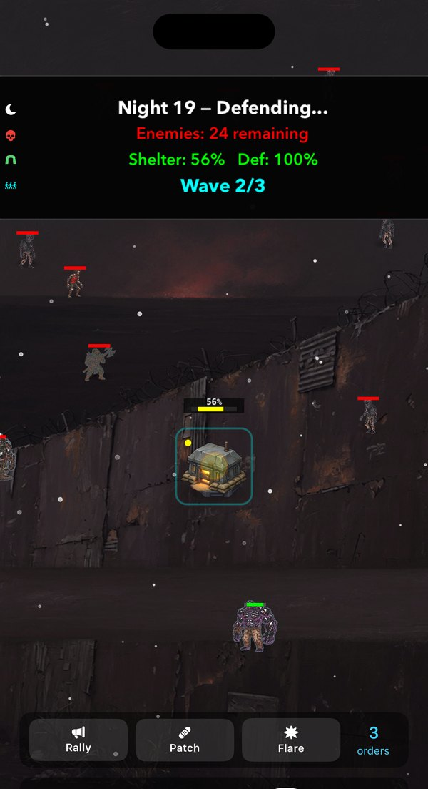
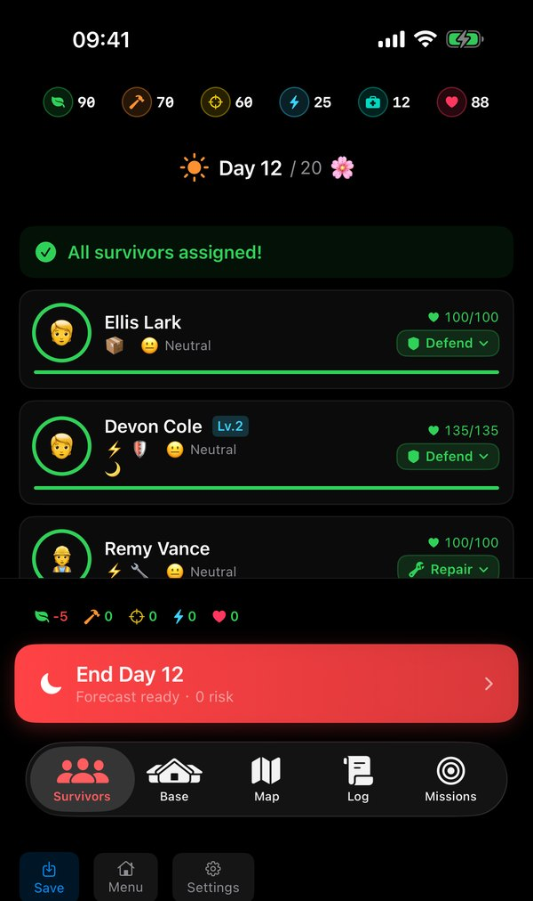
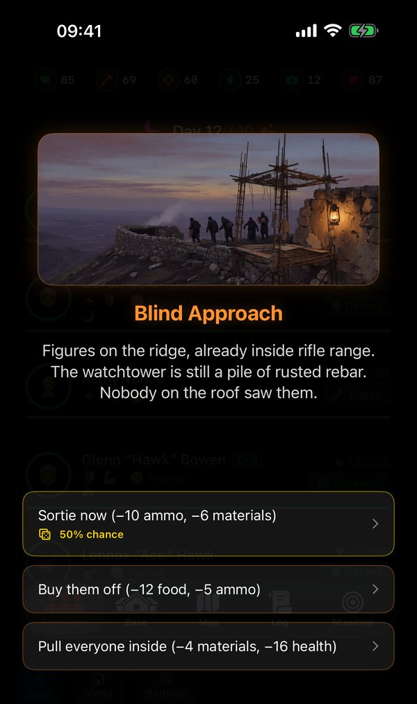
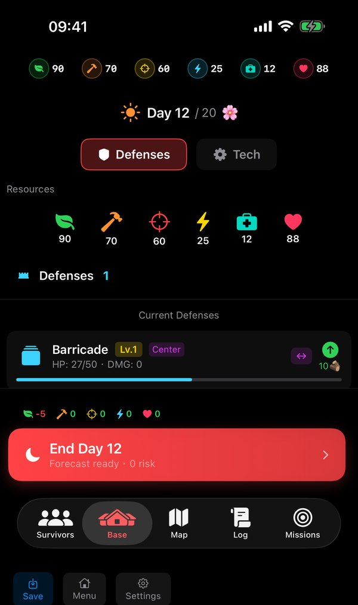
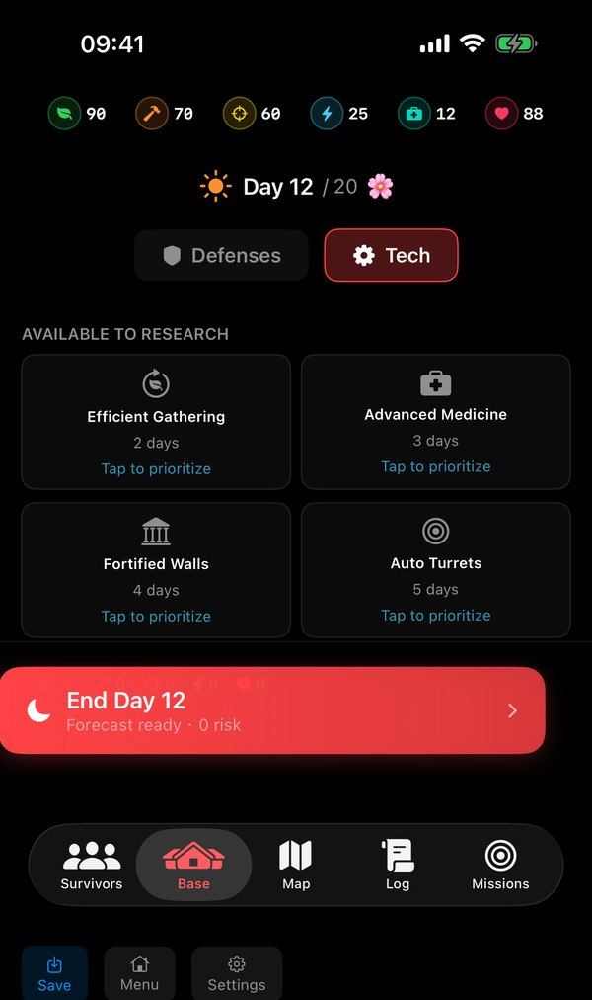
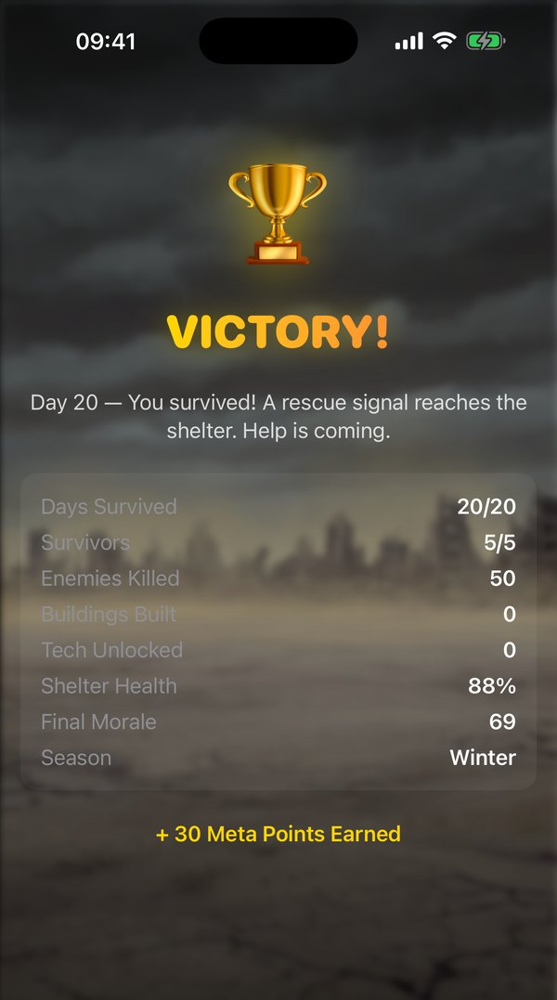

Shelter Fall
The world ended. A handful of survivors look to you for leadership. Build the shelter, command the defense, and keep them alive for twenty brutal days.

Free to play · No paywalls · Plays fully offline · iOS 17+
The world ended. A handful of survivors look to you for leadership. Build the shelter, command the defense, and keep them alive for twenty brutal days.
Free to play · No paywalls · Plays fully offline · iOS 17+
Days are for planning. Nights are fought in real time, and you are not a spectator.






A full strategy game in runs short enough to finish in a sitting — and different every time.
Three tactical orders during the defense: rally your defenders for a damage surge, emergency-patch your weakest wall, or drop a flare onto a cluster of enemies. The night is no longer something you just watch.
Ten buildings — greenhouse, med bay, workshop, watchtower, barracks and more. Each one changes what your survivors can do the next morning.
Five defense types — barricade, trap, turret, generator, wall — upgradeable to level 5, and you choose which flank each one holds.
Twenty-five technologies, from Efficient Gathering to Night Vision and Auto Turrets. With no power, research still runs — at half speed, by lamplight.
Raiders at the gate, a sealed crate, a rival faction's ultimatum. Risky choices show their odds before you commit, and every price — including health — is on the button.
Survivors have traits, moods, levels and perks. They get hurt, they get sick, they get tired — and losing one is felt for the rest of the run.
Plan in daylight. Live with it after dark.
Assign every survivor before you end the day. The forecast tells you what tomorrow costs and warns you what is about to go wrong.
When dark falls the attack begins in a real-time scene. Turrets fire, traps trigger, walls break. You spend your three orders and hope it was enough.
Each one rewrites a rule of the game, not just the numbers.
| Scenario | The twist |
|---|---|
| 🏠 Standard | The classic survival run. Twenty days, no special rules. |
| ⚔️ Last Stand | Heavy weapons, no resupply. You cannot gather ammo — crates drop from kills. |
| 🚶 Exodus | Your shelter is failing and loses health every day. Keep it standing until evacuation. |
| ☠️ Plague | Every survivor starts sick. Research the cure before it takes them. |
| 🏰 The Siege | Massive walls, endless hordes. Double enemy waves, extra walls to start. |
Every difficulty runs the full twenty days — harder means thinner margins, not a shorter game.
| Difficulty | Survivors | What changes |
|---|---|---|
| ☘️ Easy | 6 | Generous supplies. Good for learning the loop. |
| ⚔️ Normal | 5 | Balanced pressure — the intended experience. |
| 💀 Hard | 3 | Scarce supplies and 50% larger waves. |
| ☠️ Apocalypse | 2 | Almost nothing to start, and double waves. |
Losing is part of it. Every run leaves something behind.
From your first dawn to a flawless night with the shelter untouched.
Earn meta points every run, spend them on permanent upgrades, and prestige for a deeper reset once you have outgrown them.
Survive day 20 and keep going. Endless runs still earn meta points, kills and best-day records.
There is one optional purchase, and it does not sell you an advantage.
No energy timers, no paywalled content, no premium currency. Every scenario, difficulty, technology and building is available without spending anything.
A single non-consumable purchase removes every banner, interstitial and app-open ad. Supporters also get the second-chance revive and supply drop directly, with no video to sit through.
No pay-to-win. Remove Ads changes how the game is funded, not how it plays. A paying player and a free player face exactly the same twenty nights.
Free on the App Store for iPhone and iPad.